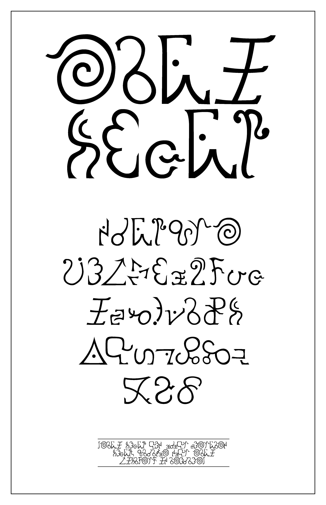

i-swork-gi was a language building project & installation,
created as a part of the 2023 Pop-Up Type Museum at Emily
Carr University of Art + Design1. The project itself entailed
the creation of an alien language called i-swork-gi, which
was also used throughout my Sci-Fi novel project [The Wanderers of the 16 Stars].
1. A yearly installation that occurs at the end of the Advanced
Typography course at ECUAD. All work created for said installation
was done between the months of October & December of 2023.
This project covers aspects of linguistics, world building, &
type design. The focus was on the creation of letterforms
& the intrinsic qualities of well-designed type, presented
in a manner that highlighted these various styles & forms
isolated from existing language: a response to the concept
that it's possible for typographers to tell when typography is
well done, even if typeset in another language. The rationale
behind making it an alien language, was, quite simply, because
it was the perfect blend of interesting & weird.

The language was conceptualized to have equivalents to
each common English sound, as well as several unique ones,
to give the language more of an alien feel. A “translation
chart” was created to showcase the i-swork-gi alphabet,
& its comparisons to English (right). Note that there are
no equivalencies for the letters C, X, & Q, as each of these
sounds is created by existing letters &/or the combination
of of them (the sounds of C are created by either S or K, X is
created by the combination of K & S, & Q is created by the
combination of K & W). As such, I felt they were uncessiary
for a phonetically grounded language.
The language was built with English equivalencies so that, as part of the exhibition, visitors would have the opportunity to create a name tag using i-swork-gi—substituting missing letters with their appropriate combinations.
The language was built with English equivalencies so that, as part of the exhibition, visitors would have the opportunity to create a name tag using i-swork-gi—substituting missing letters with their appropriate combinations.
Alongside this chart, an intentionally low-quality pronunciation video was created,
the idea being that a shapeshifting alien had created it to provide humans with the
knowledge of how to pronounce the more unusual or unfamiliar characters in i-swork-gi.

After iterating the letters, ensuring each character was
stylistically unified, I began to create 5 distinct typefaces
that aimed to encompass a decent range of within type
design. These included a modern sans serif (Hiloshu Vobra),
a traditional serif (Niru Vohrb), a geometric sans serif
(Rekknas), a pixelated, minimalist sans (Jalahas Minn) &
a comic sans-esque typeface (Jan Felff Swork-Ilb). Each
typeface was given an appropriate “alien” sounding name,
to add a sense of realism/immersion to the project.
Though most of the typefaces were simply roughed
out & then refined within Adobe Illustrator, the serif
(Niru Vohrb) involved iterating each letter form with a
chisel-tipped marker until a proper look was achieved,
before scanning & refinement within illustrator.
Each of these typefaces was then given a purely typographic “specimen poster”, alongside
an “example” (which were posters that included illustrations, excerpts from books, or
advertisements). The colors scheme between these posters were paired to
keep visual consistency within the exhibit.

Hiloshu Vobra
Rekknas
Jalahas Minn

Niru Vohrb


Jan Felff Swork-Ilb

Alongside these, I also created a series of typographic “anatomy charts”, to show the
typographic rules & conventions of the language & its various typefaces.


Though the language itself is not truly functional (it has
no true grammar, for instance), it was important to be
consistent within the project. For example, the translation
for the word “a” is always “alast”. To assist with the
realism/immersion of the project, each presented poster
Though the language itself is not truly functional (it has
no true grammar, for instance), it was important to be
consistent within the project. For example, the translation
for the word “a” is always “alast”. To assist with the
realism/immersion of the project, each presented poster
Alongside the posters, several other objects & artifacts were created for the exhibit.
A miniature guidebook take-away, that covered the history
& rules of the language, was included as part of the exhibit.
Through this guidebook, further context to the language
was given, establishing it as a “universal tongue” developed
by “The Holinamoran Union” to help unify society, industry,
& culture across the galaxy, through a commonly understood
language; build upon the foundation of existing, common &
wide-spread languages within the world.
You can view this text, in full, below:
In addition to this guidebook, I created a series of risograph printed flashcards, containing the
same information of each single page in a more ephemeral form, with some nice visual punch
from the bright risograph colors. They also made for a nice collectable item for visitors.

To help add to the immersion of the project, I also created
a children’s ABC’s book, using large block letters to show a
different & more interesting application of the language than
shown in the posters. The book itself is wordless, featuring
only colorful block letters alongside vector illustrated aliens,
leaving readers to ponder what each alien might, possibly
be called based on the sounds taught in the language chart.
The illustrations themselves were created via an initial
brainstorming session, & then eventually formed & stylized
in adobe illustrator.

You can view this text, in full, below:
As a fun easter egg for visitors to notice, certain characters
from the exhibit were also referenced within this book:
such as the alien & many-eyed planet in the comic.